一无所有~
OCR 识别提示（待核对）
- OCR 自动识别文字，尚未逐字校对；可能错字、漏字、漏行，数字、姓名、标点及断行也可能有误，请以截图为准。
- 这里只保留 PDF 已截到的正文、留言和作者回复；截图以外的留言不在此存档中。
- 未从截图推断留言总数或回复关系；手机界面文字也可能混入 OCR。
- 低置信标记仅为机器提示，并不表示未标记的文字已经准确。
识别工具：tesseract 5.5.0 · tesseract-ocr/tessdata_best chi_sim。识别器置信度仅用于提示核对，不是文字准确率。
第 1 页 · 原始截图
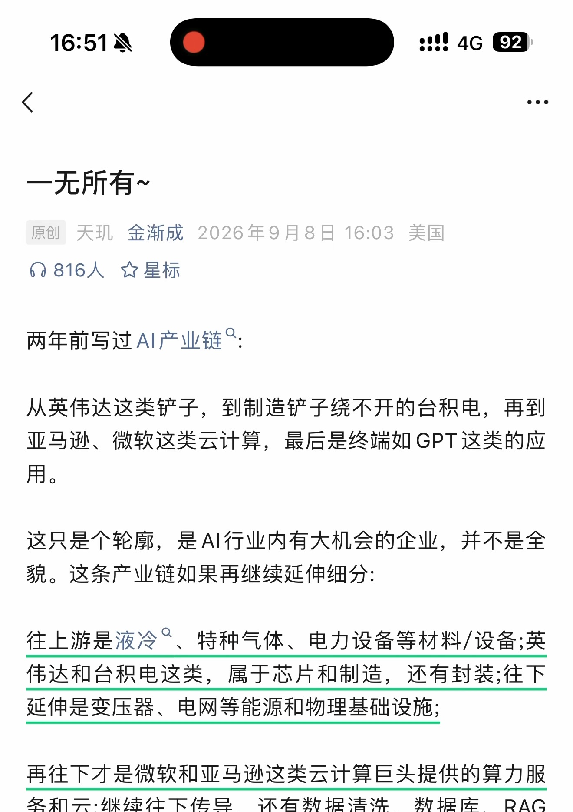
查看本页自动识别文字（OCR待核对） · 15 处低置信度提示
以下为未经逐字核对的自动识别结果，请以上方原图为准。
识别器标记 15 处低置信度，请对照截图核对
这些是识别器的风险提示，并不等于已确认的错误。
- co》
- 一无所有 ~
- 原创天现金渐成 2026 年 9 月 8 日 16:03 美国
- 人 816 人安星标
- 两年前写过 Al 产业链 ”:
- 从英伟达这类铲子， 到制造铲子绕不开的台积电， 再到
- 亚马逊、 微软这类云计算， 最后是终端如 GPT 这类的应
- 用站
- 这只是个轮廓， 是 Al 行业内有大机会的企业， 并不是全
- 瑶。 这条产业链如果再继续延伸细分 :
- 往上游是液冷 “、 特种气体、 电力设备等材料 /设备 ; 英
- 伟达和台积电这类， 属于忌片和制造， 还有封装 ; 往下
第 2 页 · 原始截图
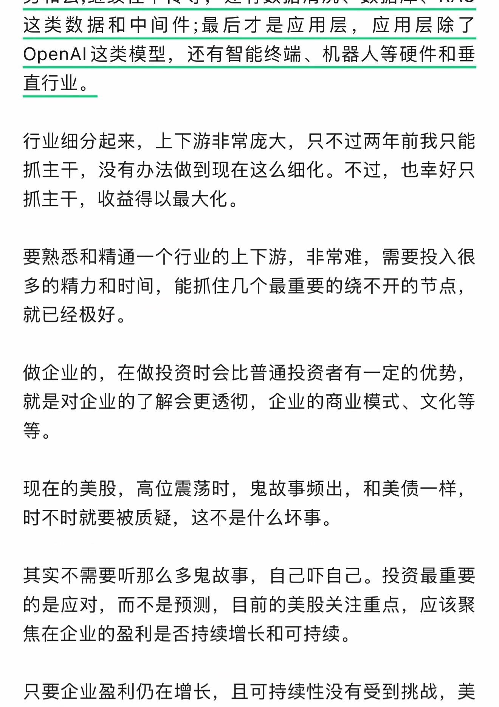
查看本页自动识别文字（OCR待核对） · 10 处低置信度提示
以下为未经逐字核对的自动识别结果，请以上方原图为准。
识别器标记 10 处低置信度，请对照截图核对
这些是识别器的风险提示，并不等于已确认的错误。
- OpenAl 这类模型， 还有智能终端、 机器人等硬件和垂
- 行业细分起来， 上下游非常让大， 只不过两年前我只能
- 抓主干， 没有办法做到现在这么细化。 不过， 也幸好只
- 抓主干， 收益得以最大化。
- 要熟悉和精通一个行业的上下游， 非常难， 需要投入很
- 现在的美股， 高位震荡时， 鬼故事频出， 和美债一样，
- 时不时就要被质疑， 这不是什么坏事。
- 焦在企业的盈利是否持续增长和可持续。
第 3 页 · 原始截图
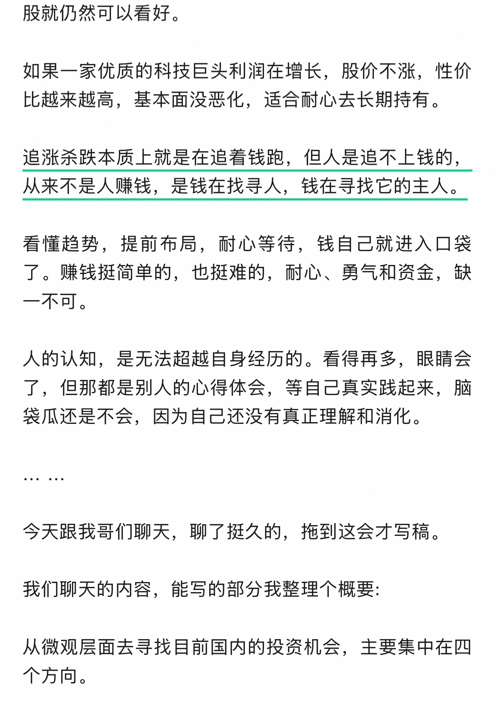
查看本页自动识别文字（OCR待核对） · 12 处低置信度提示
以下为未经逐字核对的自动识别结果，请以上方原图为准。
识别器标记 12 处低置信度，请对照截图核对
这些是识别器的风险提示，并不等于已确认的错误。
- 比越来越高， 基本面没恶化， 适合耐心去长期持有。
- 追涨杀跌本质上就是在追着钱跑， 但人是追不上钱的，
- 从来不是人赚钱， 是钱在找寻人， 钱在寻找它的主人。
- 看懂趋势， 提前布局， 耐心等待， 钱自己就进入口航
- 了。 赚钱挺简单的， 也挺难的， 耐心、 勇气和资金， 缺
- 人的认知， 是无法超越自身经历的。 看得再多， 有眼睛会
- 了， 但那都是别人的心得体会， 等自己真实践起来， 脑
- 袋瓜还是不会， 因为自己还没有真正理解和消化。
- 今天跟我哥们聊天， 聊了挺久的， 拖到这会才写稿。
第 4 页 · 原始截图
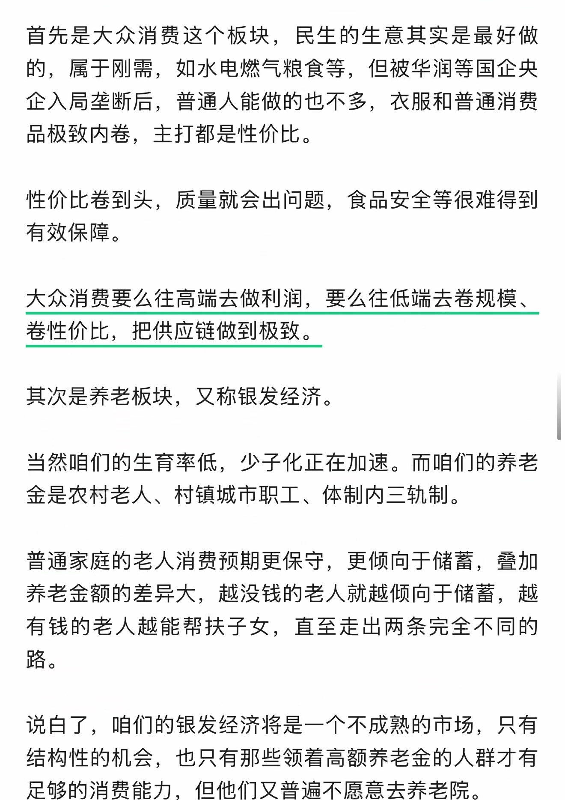
查看本页自动识别文字（OCR待核对） · 12 处低置信度提示
以下为未经逐字核对的自动识别结果，请以上方原图为准。
识别器标记 12 处低置信度，请对照截图核对
这些是识别器的风险提示，并不等于已确认的错误。
- 企入局垄断后， 普通人能做的也不多， 衣服和普通消费
- 大众消费要么往高端去做利润， 要么往低端去卷规模、
- 卷性价比， 把供应链做到极致。
- 普通家庭的老人消费预期更保守， 更倾向于储蕾， 玛加
- 养老金额的差异大， 越没钱的老人就越倾向于储著， 越
- 说白了， 咱们的银发经济将是一个不成熟的市场， 只有
- 结构性的机会， 也只有那些领着高额养老金的人群才有
第 5 页 · 原始截图
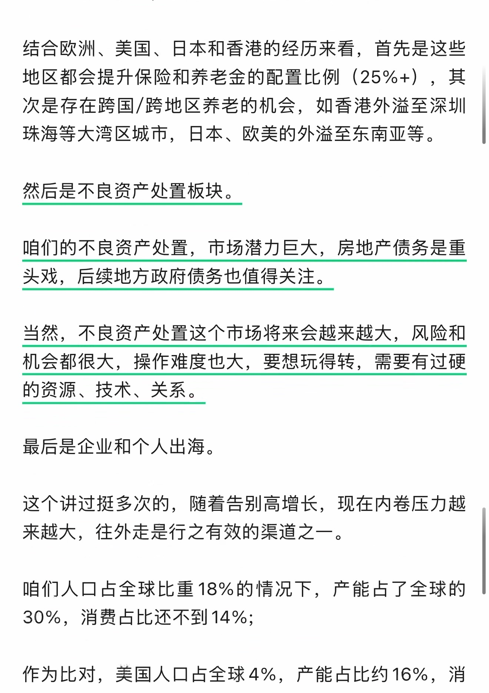
查看本页自动识别文字（OCR待核对） · 10 处低置信度提示
以下为未经逐字核对的自动识别结果，请以上方原图为准。
识别器标记 10 处低置信度，请对照截图核对
这些是识别器的风险提示，并不等于已确认的错误。
- 地区都会提升保险和养老金的配置比例 (25%+)， 其
- 次是存在跨国 / 跨地区养老的机会， 如香港外溢至深圳
- 珠海等大湾区城市， 日本、 欧美的外溢至东南亚等。
- 然后是不良资产处置板块。
- 咱们的不良资产处置， 市场潜力巨大， 房地产债务是重
- 头戏， 后续地方政府债务也值得关注。
- 机会都很大， 操作难度也大， 要想玩得转， 需要有过硬
- 来越大， 往外走是行之有效的渠道之一。
- 30%， 消费占比还不到 14%;
第 6 页 · 原始截图
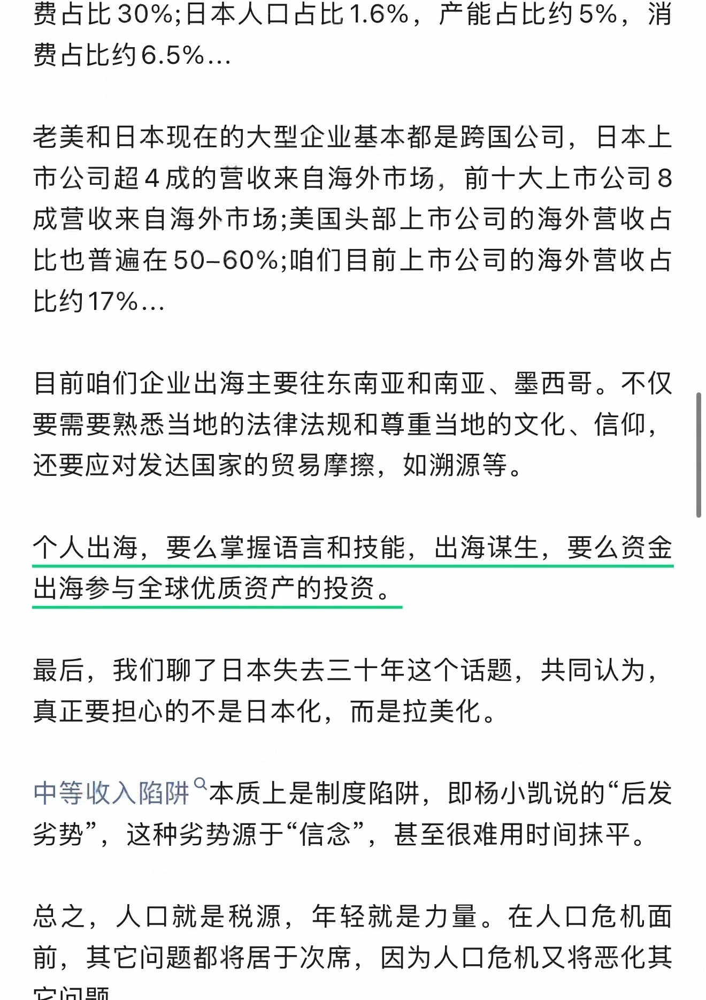
查看本页自动识别文字（OCR待核对） · 21 处低置信度提示
以下为未经逐字核对的自动识别结果，请以上方原图为准。
识别器标记 21 处低置信度，请对照截图核对
这些是识别器的风险提示，并不等于已确认的错误。
- 费占比 30%; 日本人口占比 1.6%， 产能占比约 5%， 消
- 费占比约 6.5%.…
- 市公司超 4 成的营收来自海外市场， 前十大上市公司 8
- 成营收来自海外市场 ;美国头部上市公司的海外营收占
- 比约 17% .…
- 目前咱们企业出海主要往东南亚和南亚、 墨西哥。 不仅
- 要需要熟悉当地的法律法规和尊重当地的文化、 信仰，
- 还要应对发达国家的贸易摩擦， 如溯源等。
- 个人出海， 要么掌握语言和技能， 出海谋生， 要么资金
- 中等收入陷阱 “本质上是制度陷阱， 即杨小凯说的 “后发
- 劣势， 这种势源于 “信念， 甚至很难用时间抹平。
- 总之， 人口就是税源， 年轻就是力量。 在人口危机面
第 7 页 · 原始截图
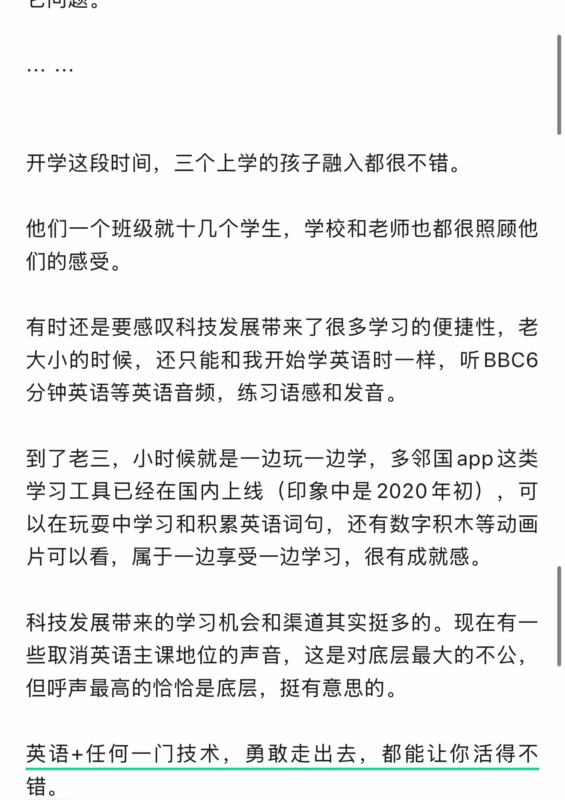
查看本页自动识别文字（OCR待核对） · 9 处低置信度提示
以下为未经逐字核对的自动识别结果，请以上方原图为准。
识别器标记 9 处低置信度，请对照截图核对
这些是识别器的风险提示，并不等于已确认的错误。
- 有时还是要感叹科技发展带来了很多学习的便捷性， 老
- 到了老三， 小时候就是一边玩一边学， 多邻国 app 这类
- 学习工具已经在国内上线 (印象中是 2020 年初 )， 可
- 以在玩雪中学习和积累英语词句， 还有数字积木等动画
- 科技发展带来的学习机会和渠道其实挺多的。 现在有一
- 些取消英语主课地位的声音， 这是对底层最大的不公，
第 8 页 · 原始截图
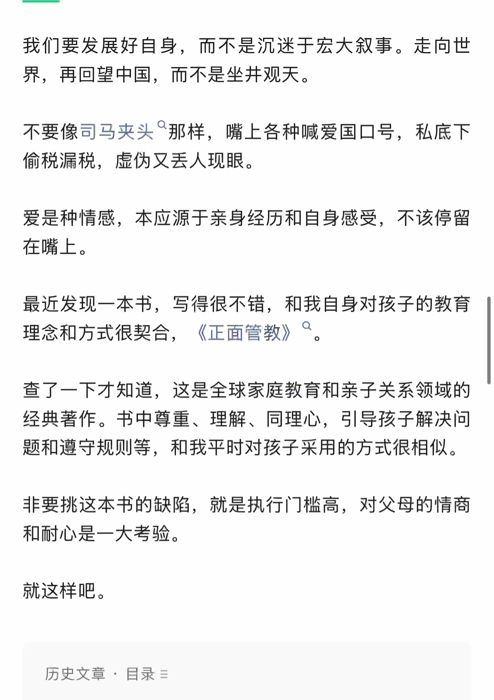
查看本页自动识别文字（OCR待核对） · 16 处低置信度提示
以下为未经逐字核对的自动识别结果，请以上方原图为准。
识别器标记 16 处低置信度，请对照截图核对
这些是识别器的风险提示，并不等于已确认的错误。
- 不要像司马夹头 " 那样， 了上各种喊爱国口号， 私底下
- 偷税漏税， 虚伪又丢人现眼。
- 爱是种情感， 本应源于亲身经历和自身感受， 不该停留
- 在嘴上。
- 理念和方式很契合，《正面管教》”。
- 经典著作。 书中尊重、 理解、 同理心， 引导孩子解决问
- 题和遵守规则等， 和我平时对孩子采用的方式很相似。
- 非要挑这本书的缺陷， 就是执行门槛高， 对父母的情商
- 历史文章目录 =
第 9 页 · 原始截图
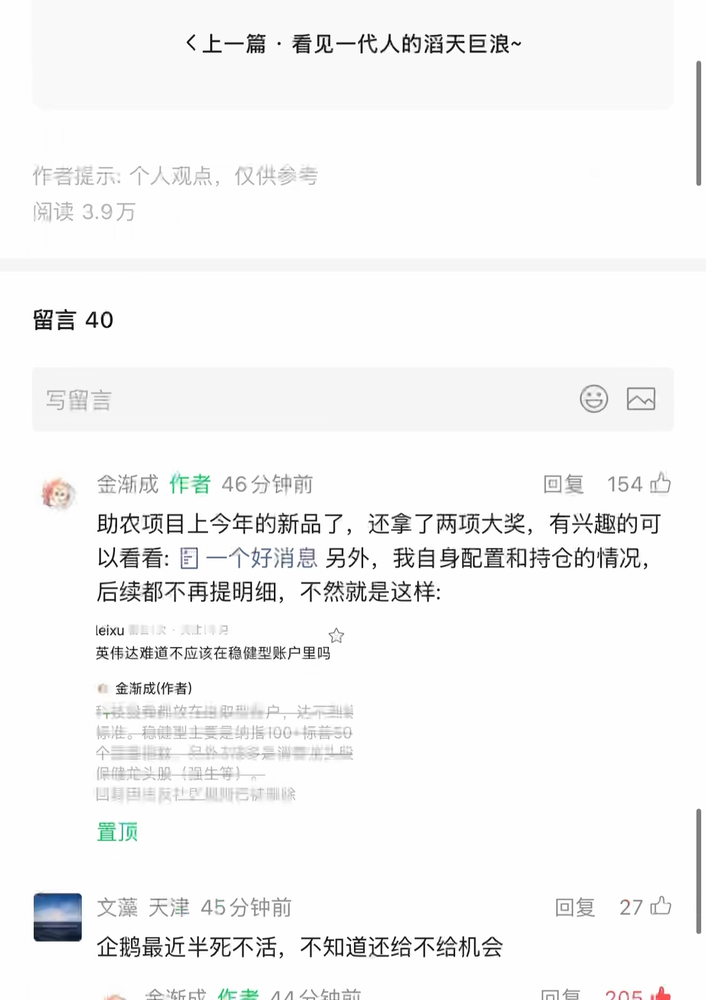
查看本页自动识别文字（OCR待核对） · 79 处低置信度提示
以下为未经逐字核对的自动识别结果，请以上方原图为准。
识别器标记 79 处低置信度，请对照截图核对
这些是识别器的风险提示，并不等于已确认的错误。
- 《上一篇看见一代人的滔天巨浪 ~
- 作寻提示 . 个人观点， 仅供参考
- 阅读 3.9 万
- 与留言 CR
- 从金渐成作者 46 分钟前回复市 《已
- 以看看 : 四一个好消息另外， 我自身配置和持仓的情况，
- 后续都不再提了明细， 不然就是这样 :
- 和
- 1 金浙成 (作者 )
- 十了从扯人半生本栏咎习 | 湛下入
- 下际笛型 3 和关于二标苦 58
- 个三号洒较一一二 Sa
- 恨皇花头琢 _ 汪生等 |
- 加呈圭三去所忆贡晴运叶册这
- 加文营天津 45 分钟前回复 “27 办
- 企吏最近半死不活， 不知道还给不给机会
- 办金渐成作者 44 分钟前回复 205 册
第 10 页 · 原始截图
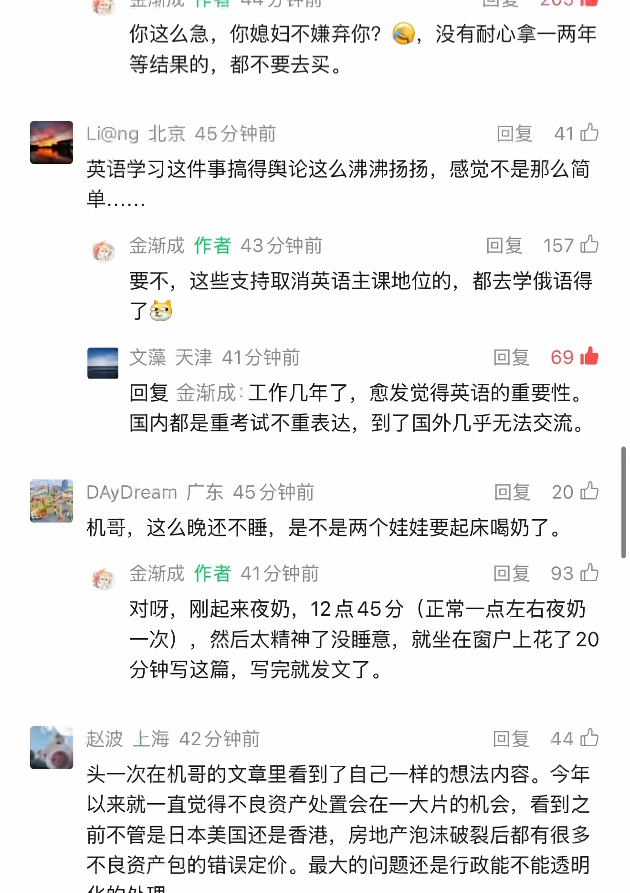
查看本页自动识别文字（OCR待核对） · 52 处低置信度提示
以下为未经逐字核对的自动识别结果，请以上方原图为准。
识别器标记 52 处低置信度，请对照截图核对
这些是识别器的风险提示，并不等于已确认的错误。
- 你这么急， 你妨妇不嫌弃你 ? 合， 没有耐心拿一两年
- 等结果的， 都不要去买。
- 图 Li@ng 北京 45 分钟前回复记忆
- 英语学习这件事摘得舆论这么沸沸扬扬， 感觉不是那么简
- 单 .….
- 蕉 ”人金浙成作者 43 分钟前回复 157 四
- 要不， 这些支持取消英语主课地位的， 都去学俄语得
- 了各
- 一文藻天津 41 分钟前回复 ”69 由
- 回复金渐成 : 工作几年了， 愈发觉得英语的重要性。
- 和 DAyDream 广东 45 分钟前回复 ”20 旋
- 机哥， 这人么晚还不睡， 是不是两个娃娃要起床喝奶了。
- 准， 金渐成作者 41 分钟前加对人
- 对呀， 刚起来夜奶，12 点 45 分 (正常一点左右夜奶
- 一次 )， 然后太精神了没睡意， 就坐在窗户上花了 20
- 分钟写这篇， 写完就发文了。
- 一赵波上海 42 分钟前回复 ”44 办
- 头一次在机哥的文章里看到了自己一样的想法内容。 今年
- 以来就一直觉得不良资产处置会在一大片的机会， 看到之
第 11 页 · 原始截图
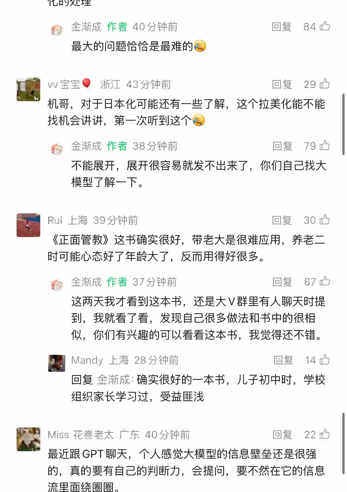
查看本页自动识别文字（OCR待核对） · 41 处低置信度提示
以下为未经逐字核对的自动识别结果，请以上方原图为准。
识别器标记 41 处低置信度，请对照截图核对
这些是识别器的风险提示，并不等于已确认的错误。
- 移人金渐成作者 40 分钟前回复 ”84 办
- 最大的问题恰恰是最难的登
- vv 宝宝介浙江 43 分钟前回复 ”29 办
- 找机会讲讲， 第一次听到这个登
- 稚， 金渐成作者 38 分钟前回复 79 办
- Rui 上海 39 分钟前回复 ”30 让
- 《正面管教》 这书确实很好， 带老大是很难应用， 养老二
- 稚 “全渐成作者 37 分钟前回复 ”67 四
- 到， 我就看了看， 发现自己很多做法和刷中的很检
- 一 Mandy 上海 28 分钟前回复 14 四
- 组织家长学习过， 受益菲浅
- Miss 花卷老太广东 40 分钟前回复 ”22
- 最近跟 GPT 聊天， 个人感觉大模型的信息壁垒还是很强
- 的， 真的要有自己的判断力， 会提问， 要不然在它的信息
- 流里面绕圈圈。
第 12 页 · 原始截图
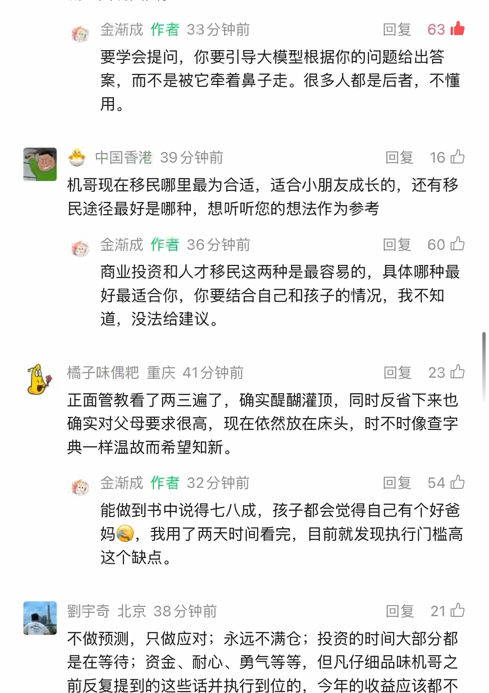
查看本页自动识别文字（OCR待核对） · 63 处低置信度提示
以下为未经逐字核对的自动识别结果，请以上方原图为准。
识别器标记 63 处低置信度，请对照截图核对
这些是识别器的风险提示，并不等于已确认的错误。
- 稚金渐成作者 33 分钟前回复 63 由
- 案， 而不是被它牵着鼻子走。 很多人都是后者， 不懂
- 用白
- | 若中国香港 39 分钟前回复 16 四
- 机哥现在移民哪里最为合适， 适合小朋友成长的， 还有移
- 民途径最好是哪种， 想听听您的想法作为参考
- 合金渐成作者 36 分钟前回复 ”60 内
- 商业投资和人才移民这两种是最容易的， 具体哪种最
- 好最适合你， 你要结合自己和孩子的情况， 我不知
- - 闽 * 异估蔡凯济和一让党台回复 ”23 四
- 正面管教看了两三遍了， 确实本本灌顶， 同时反省下来也
- 烙人金渐成作者 32 分钟前回复 ”54 办
- 能做到书中说得七八成， 孩子都会觉得自己有个好区
- 妈线， 我用了两天时间看完， 目前就发现执行门槛高
- ,一蚂用号共浊 om 中澡可回复已
- 不做预测， 只做应对， 永远不满仓 ;投资的时间大部分都
第 13 页 · 原始截图
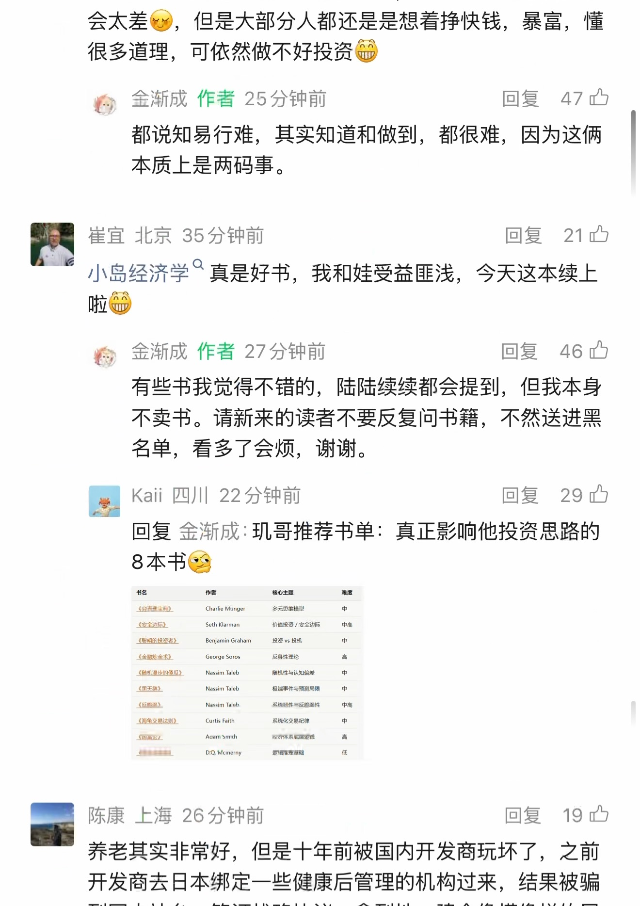
查看本页自动识别文字（OCR待核对） · 39 处低置信度提示
以下为未经逐字核对的自动识别结果，请以上方原图为准。
识别器标记 39 处低置信度，请对照截图核对
这些是识别器的风险提示，并不等于已确认的错误。
- 会太差饮， 但是大部分人都还是是想着挣快钱， 暴富， 懂
- 很多道理， 可依然做不好投资贷
- 四 ”人金渐成作者 25 分钟前回复 47 办
- 败宜北京 35 分钟前回复 ”21 办
- 小岛经济学 ”真是好书， 我和娃受益匪浅， 今天这本续上
- 啦锚
- 等金渐成作者 27 分钟前回复 ”46 此
- 不卖书。 请新来的读者不要反复问书籍， 不然送进黑
- 名单， 看多了会烦， 谢谢。
- Kaii 四川 22 分钟前回复 ”29 已
- 回复金渐成 : 现哥推荐书单 : 真正影响他投资思路的
- 8 本书怠
- Charie Munger
- Seth Miarman
- Nassim Taleb
- Car Fath
- | 陈康上海 26 分钟前回复 ”19 路
- 开发商去日本绑定一些健康后管理的机构过来， 结果被骗
第 14 页 · 原始截图
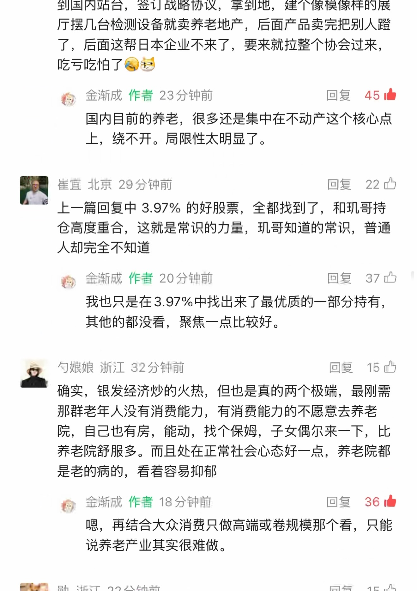
查看本页自动识别文字（OCR待核对） · 43 处低置信度提示
以下为未经逐字核对的自动识别结果，请以上方原图为准。
识别器标记 43 处低置信度，请对照截图核对
这些是识别器的风险提示，并不等于已确认的错误。
- 全
- 厅摆几台检测设备就卖养老地产， 后面产品卖完把别人路
- 吃亏吃怕了俐示
- 从 ”人金渐成作者 23 分钟前回复 45 由
- 国内目前的养老， 很多还是集中在不动产这个核心点
- 崔宜北京 29 分钟前回复 ”22 号
- 上一篇回复中 3.97% 的好股票， 全都找到了， 和现哥持
- 仓高度重合， 这就是常识的力量， 现哥知道的常识， 普通
- 准， 金新成作者 20 分钟前回复 ”37 只
- 我也只是在 3.97% 中找出来了最优质的一部分持有，
- 勺娘娘浙江 32 分钟前回复 ”15 中
- 养老院舒服多。 而且处在正常社会心态好一点， 养老院都
- 是老的病的， 看着容易抑郁
- 寻金渐成作者 18 分钟前回复名二
- 咽， 再结合大众消费只做高端或卷规模那个看， 只能
- 勋浙江 22 分钟前回复 15 中
第 15 页 · 原始截图
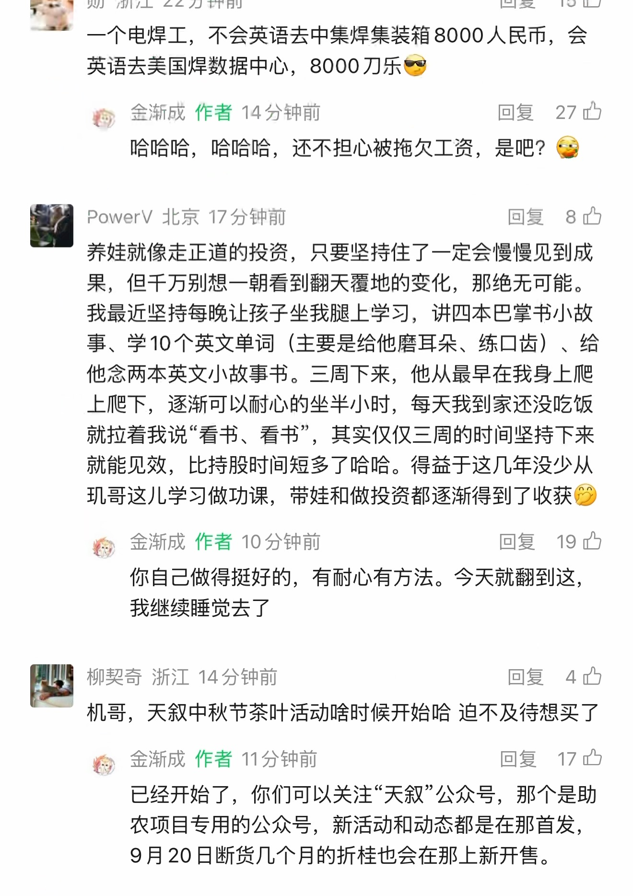
查看本页自动识别文字（OCR待核对） · 51 处低置信度提示
以下为未经逐字核对的自动识别结果，请以上方原图为准。
识别器标记 51 处低置信度，请对照截图核对
这些是识别器的风险提示，并不等于已确认的错误。
- 本勋浙江 22 分钟前回复 15 四
- 英语去美国焊数据中心，8000 刀乐笨
- 将， 爹渐成作者 14 分钟前回复 “27 内
- 哈哈哈， 哈哈哈， 还不担心被拖欠工资， 是吧 ? 对
- | PowerV 北京 17 分钟前回复 ”8
- 果， 但干万别想一朝看到翻天覆地的变化， 那绝无可能。
- 事、 学 10 个英文单词 (主要是给他磨耳抄、 练口齿 )、 给
- 他念两本英文小故事书。 三周下来， 他从最早在我身上疏
- 上疏下， 逐渐可以耐心的坐半小时， 每天我到家还没吃饭
- 就拉着我说 "看书、 看书 ”， 其实仅仅三周的时间坚持下来
- 就能见效， 比持股时间短多了哈哈。 得益于这几年没少从
- 现哥这儿学习做功课， 带娃和做投资都逐渐得到了收获僚
- 交人金渐成作者 10 分钟前回复 “19 办
- 你自己做得挺好的， 有耐心有方法。 今天就翻到这，
- 本柳契奇浙江 14 分钟前回复 4 办
- 机哥， 天叙中秋节茶叶活动哈时候开始哈迫不及待想买了
- 疙人金渐成作者 1 分钟前回复 17 呈
- 已经开始了， 你们可以关注 “天叙 "公众号， 那个是助
第 16 页 · 原始截图
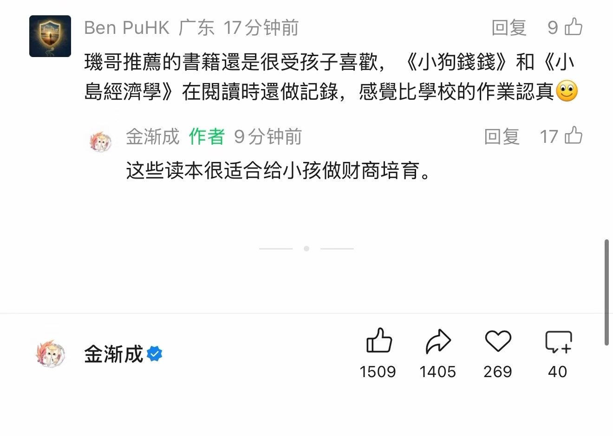
查看本页自动识别文字（OCR待核对） · 28 处低置信度提示
以下为未经逐字核对的自动识别结果，请以上方原图为准。
识别器标记 28 处低置信度，请对照截图核对
这些是识别器的风险提示，并不等于已确认的错误。
- ,一 Ben PuHK 广东 17 分钟前回复 9 让
- 珊哥推荐的书籍迁是很受孩子喜鞭，《小狗钱钱》 和 《小
- 篇经济学》 在并读时还做记多， 感觉比学校的作业认真甸
- 痊， 金渐成作者 9 分钟前回复已
- 蛤， 金渐成名四》 3
- 1509 1405 “269 40
按日期浏览全部来源（同日按条目标识排序）
回到页首 ↑